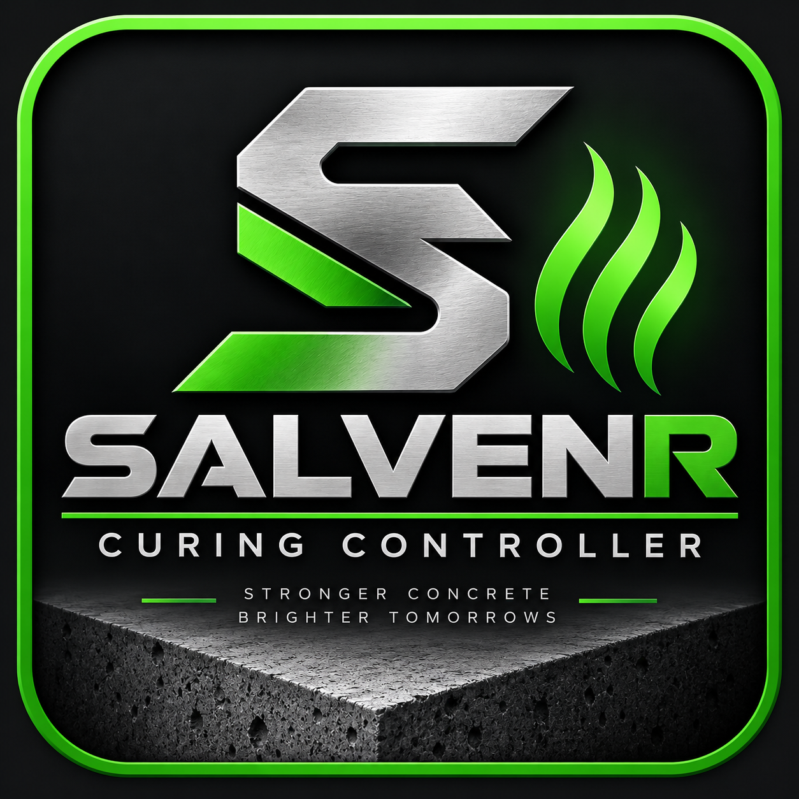

SALVENR CURING CYCLE REPORT
Sample QA report · demonstration data
MAX TEMPERATURE61.4°C
HOLD DURATION4 h 02 min
PROBE DIFFERENCE0.9°C max
ALARMS0
Demonstration report only. This page illustrates the type of production record that can be produced from SALVENR cycle data. Final report fields and pass criteria should be configured to the customer's approved process and QA requirements.